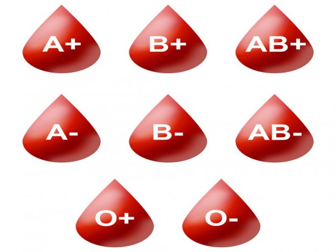
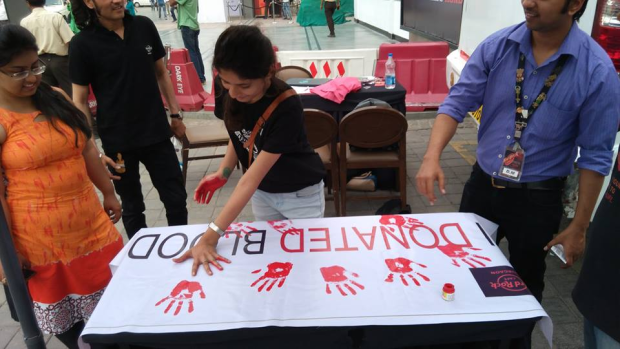

What Is Blood?>
Blood cannot be manufactured in factories;
it can only come from generous donors.Blood
is the red coloured fluid flowing continuously
in our body’s circulatory system. It contains
main a fluid called plasma in which are suspended
cellular elements.

Types Of Blood
The ABO Blood Group System. There are four major
blood groups determined by the presence or absence
of two antigens – A and B – on the surface of red blood
cells: Group A – has only the A antigen on red cells
(and B antibody in the plasma) Group B – has only the
B antigen on red cells (and A antibody in the plasma)
BLOOD!!!

For people who require blood urgently, we have a 24×7 student run helpline with the sole aim of helping those in dire need of blood. The way this works, is that we have a database of donors who are willing to donate in such emergency situations (if there is a shortage in their area of residence/work). When we receive a request for blood, we run through this database and try to look for a donor.
The Helpline department, in fact, is the most basic, and I am going to take the liberty of saying: the most essential part of our organization, given that is actually how BloodConnect started. It targets the need for blood at the grass-root level- where we provide blood directly to those who need it.
These are broadly the three areas in which we work. We call them ‘ground level activities’, because that is exactly what they are. They target the problem right where it exists. The lack of awareness, shortage in blood banks, and urgent requirements in hospitals.
This way we have established a network of youth across the country to assist in the movement.